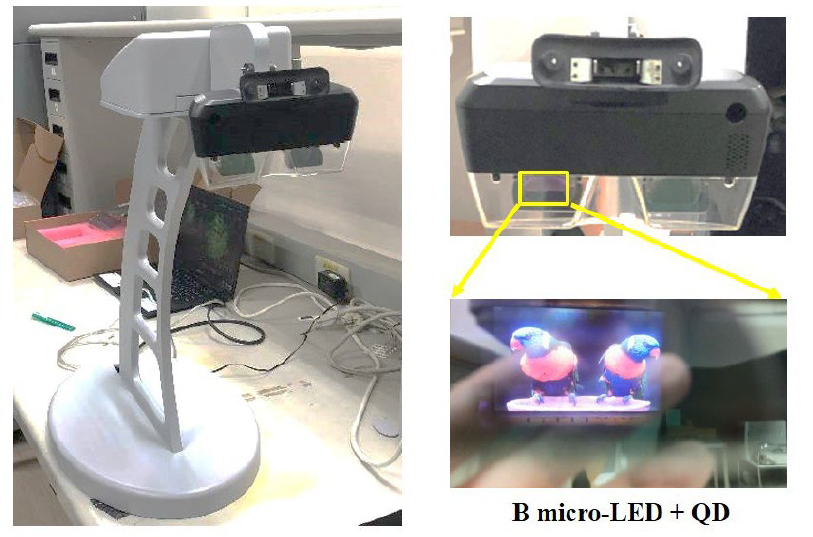

| 應用於 AR 智慧眼鏡之全彩 micro-LED 顯示器 Full-Color Micro LED Display for AR/MR Applications |
| 工研院高精密陣列之全彩 micro-LED 顯示模組領先全球成功 完成單板全彩顯示器製作，透過高度整合「量子點光色轉換」、 「micro-LED 主動驅動」及「高解析度顯示模組」三大特點並 突破技術挑戰，並搭配量子點(QD)光色轉換技術，實現高解析 高效率之全彩顯示功能。並成功將全彩 micro-LED Display 整 合於 AR 智慧眼鏡載具，未來朝可 AR/MR 產品應用邁進。  |
| 技術洽詢聯絡人：蔡婷舜 聯絡電話：03-5914480 手機: 0975916138 E-mail：tstsai@itri.org.tw |